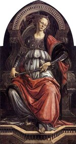
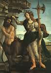
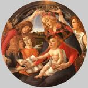
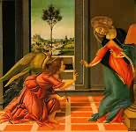

Sandro Botticelli
Cliccare sulle immagini per ingrandirle
1 
2 
3 
4 
5 
6 
7 
8 
9 
10 
11 
12 
13 
14 
15 
16 
17 
18 
19 
20 
21 
22 
Alessandro di Mariano Filipepi, detto Sandro Botticelli
(Firenze 1445 - Firenze 1510)

Introduzione
Figlio del conciatore fiorentino Mariano Filipepi, Alessandro, detto "Sandro", ricevette il soprannome di "Botticelli" per un motivo che resta incerto. Verso il 1464 entrò nella bottega di Filippo Lippi, restandovi per circa 3 anni. Pur avendo tratto profitto dall'insegnamento del suo maestro, creatore di forme dense ed eleganti, nutrì ancor più interesse per le esperienze di due artisti fiorentini appartenenti alla seconda generazione del Rinascimento fiorentino: Andrea Verrocchio, del quale fu assistente per breve tempo, e Piero Pollaiolo. Il loro stile inquieto e raffinato trasse nuovi insegnamenti dall'anatomia e, nel caso del Verrocchio, dalla rappresentazione del movimento. Forse anche lo scultore Agostino di Duccio (1418 - ca. 1481), con il fascino del suo stile ondeggiante, contribuì alla formazione di Botticelli.
Il pittore alla ricerca del suo stile
A questo primo periodo appartengono parecchie Vergini col Bambino (1), generalmente accompagnate da angeli, caratterizzate da una grazia aristocratica; è possibile vedere come l'influenza del Lippi cede progressivamente il passo a quella del Verrocchio. Tra queste Madonne è possibile citare quella dell'Accademia e della Galleria degli Uffizi, a Firenze, della pinacoteca di Capodimonte a Napoli, del museo Fesch ad Ajaccio, del Louvre, della National Gallery di Londra, della National Gallery di Washington, ecc.. Nel 1470, grazie all'appoggio di un personaggio vicino ai Medici, Tommaso Soderini, Botticelli ottenne la sua prima commessa ufficiale: la Forza (2), figura allegorica per il Tribunale del commercio di Firenze. Questa tavola, attualmente esposta agli Uffizi, fa prevalere definitivamente l'influenza del Verrocchio e di Piero Pollaiolo (al quale era stato inizialmente chiesto di dipingere la serie completa delle sette Virtù) su quella di Lippi Verrocchio. La Madonna con sei santi (3) (Uffizi) è molto vicina a la Forza, sia per il suo stile sia, senza dubbio, per la data. Nel 1472, Botticelli si iscrisse all'accademia di San Luca. E in questo periodo che dipinse le due piccole tavole della Storia di Giuditta (Uffizi), dalla fattura preziosa e brillante. Il San Sebastiano (4) del museo di Berlino, proveniente forse da Santa Maria Maggiore di Firenze, sembra essere leggermente posteriore; l'anatomia estremamente tesa ricorda il Pollaiolo, ma l'espressione meditativa trasmette una spiritualità più profonda. Nel 1474 Botticelli va a Pisa per completare il ciclo di affreschi del Campo Santo, ma non può completare questo progetto.
Il mecenatismo dei Medici
Di ritorno a Firenze, Botticelli fu incaricato di decorare con una figura di Pallade lo stendardo di Giuliano de Medici, in occasione di una giostra tenuta nel 1475 in piazza Santa Croce: i pittori dell'epoca non disdegnavano questo tipo di incarichi. Botticelli era anche in contatto con la cerchia dei Medici. Un amico dell'illustre famiglia, il cambiavalute Giovanni Lami, in quello stesso periodo gli commissionò, per la sua cappella a Santa Maria Novella, la tavola dell'Adorazione dei Magi (5) (Uffizi), una composizione molto densa che rappresenta la prima opera maggiore dell'artista, che vi compare insieme a molti membri della famiglia Medici: Cosimo il Vecchio, Pietro il Gottoso, Giovanni, Giuliano, Lorenzo. É possibile raffrontarvi dei bei ritratti individuali: quello di un uomo che tiene una medaglia di Cosimo il Vecchio (uffizi), quello di Giuliano de Medici (National Gallery, Washington).
Nel 1478 Botticelli ricevette l'incarico di dipingere le effigi dei membri della congiura dei Pazzi, impiccati dopo la loro sconfitta; quest'opera di circostanza non ci è giunta. Più o meno nello stesso periodo, l'artista completa la sua Madonna con otto angeli del museo di Berlino, un "tondo" proveniente senza dubbio da San Salvatore al Monte e, soprattutto, il suo quadro più famoso, la Primavera (6), commissionato nel 1477 per due fratelli de Medici, Lorenzo e Giovanni di Pierfrancesco, e collocato nella villa di Castello, nei pressi di Firenze (attualmente agli Uffizi). La grazia lineare che si dischiude, prestando una sembianza sensibile al mondo ideale dei pensatori neoplatonici e attestante il linguaggio del tutto personale appena trovata da Botticelli, ispira anche i due affreschi allegorici della villa Tornabuoni-Lemmi (attualmente esposti al Louvre), le cui date di realizzazione non sono conosciute: un giovane di fronte all'assemblea delle Arti, personificate da figure femminili e una fanciulla che riceve doni dalle mani di Venere accompagnata dalle Grazie.
L’intermezzo romano
Negli anni 1481-82 Botticelli soggiorna a Roma; questo è un periodo di capitale importanza per la sua attività artistica. Secondo i termini del contratto firmato il 27 ottobre 1481, il papa Sisto IV gli chiedeva di associarsi a Cosimo Rosselli (1439-1507), al Ghirlandaio e al Pinturicchio - ai quali dovevano aggiungersi ben presto Luca Signorelli, il Pinturicchio (ca. 1554-1613) e Piero di Cosimo (ca. 1462-1521) - per affrescare le pareti della cappella che il pontefice aveva da poco fatto costruire in Vaticano, la Cappella Sistina, con storie sacre del Vecchio e Nuovo Testamento che contenessero, nello stesso tempo, riferimenti al ministero del pontefice. La parte dipinta da Botticelli è costituita da tre composizioni: la Giovinezza di Mosè, la Punizione di Korah e la Tentazione di Gesù Cristo (7). È da notare che ognuna di queste opere, obbedendo ad una tradizione medievale, riunisce diversi episodi. La brillante Adorazione dei Magi della National Gallery di Washington è senza dubbio un'ulteriore testimonianza dell'attività romana del maestro.
Il periodo di gloria a Firenze
A Firenze, l'umanesimo coltivato con passione da Lorenzo il Magnifico e dalla sua corte trova in Botticelli il suo migliore interprete nel linguaggio artistico. Poco dopo il suo ritorno, egli esegue, di nuovo per Lorenzo e Giovanni di Pierfrancesco, i due celebri dipinti di argomento mitologico della villa di Castello, oggi agli Uffizi: Minerva e il Centauro (8), la Nascita di Venere (9) e probabilmente dipinse per il Magnifico la Storia di Nastagio degli Onesti(10), tratta dal Boccaccio, in quattro tavole; tre di queste tavole si trovano al Prado di Madrid, l'altra in una collezione privata negli Stati Uniti. Il dipinto Marte e Venere (11) (National Gallery di Londra) fu probabilmente commissionato da un'altra famiglia illustre, i Vespucci. Verso il 1485 Botticelli torna al tema della Madonna, ma con la disinvoltura della maturità; le versioni più celebri sono la Madonna del libro, del museo Poldi Pezzoli a Milano, la Madonna del Magnificat (12) e la Madonna della Melagrana degli Uffizi, entrambe in "tondo"; infine, la Madonna Bardi (13) (Berlino), commissionata da Agnolo Bardi per la sua cappella al Santo Spirito di Firenze. Poco prima del 1490, il pittore ottenne una commissione, assai rara nel corso della sua attività artistica, per due opere di grandi dimensioni: la Pala di San Barnaba (14) (Uffizi), per la corporazione fiorentina dei medici e dei farmacisti, che sulla tavola principale riunisce, in primo piano su uno sfondo architettonico, la Vergine seduta sul trono, sei santi e quattro angeli, mentre sulla predella sono rappresentate scene diverse; la Pala di San Marco (Uffizi), per la corporazione degli orefici, con l'Incoronazione della Vergine e quattro santi nella tavola principale, con storie sacre sulla predella, insieme che è stato eseguito con l'aiuto di alcuni allievi.
|
Illustrazioni della Divina Commedia di Dante Sandro Botticelli inizio ad illustrare la Divina Commedia di Dante su richiesta di Lorenzo di Pier Francesco de Medici, verso il 1490. I suoi disegni permettono di condividere il fascino dell'artista fiorentino per questo capolavoro della poesia e di umanità immaginato da Dante Alighieri.
|
La crisi finale
La morte di Lorenzo il Magnifico, avvenuta nel 1492, pose fine al periodo più brillante della civiltà fiorentina. Dopo le sommosse provocate dal malgoverno di Piero de Medici, la dittatura teocratica di Savonarola ebbe ragione dell'Umanesimo. La crisi politica e morale di Firenze coincide in gran parte con la crisi verificatasi verso la fine della vita di Botticelli. Nelle sue ultime opere troviamo un'esaltazione del sentimento religioso, nelle quali non è estranea l'influenza di Girolamo Savonarola.
È il periodo dei disegni per la Divina Commedia di Dante (15), e di un solo quadro importante di soggetto profano, La calunnia, dipinto per Antonio Segni in base alle descrizioni dell'antico capolavoro di Apelle; anche in quest'opera l'umanismo risulta impregnato di meditazione cristiana. L'Annunciazione (16), dipinta intorno al 1490 per Santa Maria Maddalena dei Pazzi (Uffizi) rinnovava il tema caratterizzandolo con accenti più mossi e un clima drammatico, di cui La Vergine in piedi col Bambino abbracciato da San Giovanni Battista (17) (Palazzo Pitti), posteriore di alcuni anni, offre nuovamente l'esempio di una disposizione particolarmente ardita. Le due Pietà, dipinte intorno al 1495, quella della pinacoteca di Monaco e quella del museo Poldi-Pezzoli di Milano, segnano il culmine della tensione tragica, mentre la figura isolata (senza dubbio ispirata alla Thamar abbandonata) denominata La derelitta (19) (Palazzo Rospigliosi, Roma) esprime un sentimento di profonda angoscia. Ciò non impedisce a Botticelli di dipingere, nello stesso periodo, alcune piccole tavole di preziosa fattura, con un linguaggio pittorico meno aspro, seppur sempre adattato alla rappresentazione della vita interiore: Sant'Agostino scrivente, agli Uffizi, l'Annunciazione e la Comunione di San Gerolamo (20) del Metropolitan Museum di New York, le scene della Vita di San Zenobio, raffigurate su quattro tavole (Londra, New York e Dresda). Infine le predicazioni di Savonarola sembrano aver direttamente ispirato la Natività mistica (21) della National Gallery di Londra (1501) e la Crocifissione (22) al Fogg Art Museum di Cambridge (Massachusetts).
Dopo la morte di Botticelli, alcuni giovani artisti diedero un nuovo indirizzo al Rinascimento: Michelangelo, Leonardo da Vinci, Andrea del Sarto, Raffaello. Il suo stile pittorico, già datato, cadeva ben presto nell'oblio e soltanto con il XIX secolo sarebbe stato rivalutato.
Linea, movimento e colore
Durante il Rinascimento fiorentino è possibile distinguere un'importante corrente artistica, che ha inizio nella prima metà del XV secolo ad opera di pittori come Masaccio e Paolo Uccello, la cui principale ambizione era quella di rappresentare un mondo in cui le apparenze sensibili fossero sottomesse alle leggi della ragione, e in cui i densi volumi potessero occupare uno spazio razionalmente organizzato dalla prospettiva geometrica.
In linea generale, Botticelli non attribuisce grande importanza a questi principi estetici, che giunge addirittura a contraddire, ma non per incapacità tecniche: l'Adorazione dei Magi degli Uffizi e quella della National Gallery di Washington, costituiscono ambedue composizioni magistralmente costruite su calcoli a tre dimensioni, la cui stretta convergenza obbedisce a un principio di unità; il Sant'Agostino, dipinto in affresco nella chiesa di Ognissanti a Firenze (ca. 1480), dà prova, col rilievo della figura, di un'autorità che ricorda quella di Andrea del Castagno, mentre la rappresentazione dei dettagli denota un realismo meticoloso e robusto, che si riscontra raramente nelle opere del maestro.
Botticelli avrebbe potuto proseguire in queste ricerche, ma la sua visione assolutamente personale è quella di un mondo più libero, che ha saputo adornare con affascinante poesia. Le figure non sono disposte su diversi livelli secondo le esigenze di uno spazio sovrano, ma piuttosto presentate su un piano molto ravvicinato rispetto allo spettatore, con uno sfondo che tende a limitare la profondità e che prende a prestito i suoi elementi dall'architettura, dagli sfondi o dal paesaggio. Talvolta le sue figure sposano con grazia la forma circolare del "tondo" (Madonna del Magnificat(), altre volte determinano la composizione di un fregio (Primavera), oppure vengono ordinate secondo una rappresentazione di tipo medievale e con intenzione teologica (affreschi della Cappella Sistina, la Natività di Londra); ma ciò che le accomuna è il ritmo morbido e quasi musicale, che traduce il movimento in una danza che ingentilisce e alleggerisce le forme. Questo movimento, essenziale al mondo di Botticelli, è marcato dal tratto, che assume un'importanza maggiore del volume. Nervoso, imprevisto, dotato di una sensibilità originale, il disegno fa muovere la figura umana o talvolta la tormenta, la spezza secondo il capriccio del pittore; insiste sulle asperità dei contorni, sulle particolarità asimmetriche dei volti; ed è proprio questa irregolarità che lo distingue in modo preciso dagli arabeschi decorativi: è l'espressione del pensiero.
Tuttavia, il primato del tratto non implica, in Botticelli, quell'indifferenza alla materia pittorica che si attribuisce spesso ai pittori della scuola fiorentina. La raffinatezza della sua fattura e il suo gusto per il colore si riscontrano soprattutto in una serie di piccoli dipinti, preziosi come delle miniature, che ritroviamo nel corso di tutta la sua carriera, dalla Storia di Giuditta alla Vita di San Zenobio. E ciò vale anche per le opere di maggiori dimensioni, siano esse affreschi, tempere oppure all'uovo. Il colore si presenta particolarmente brillante, come nella Madonna del Magnificat, oppure più opaco, come nella Nascita di Venere, o un po' soffuso, come nella Primavera; sempre, comunque, armonioso e trasparente, tanto da sembrar penetrato da una luce cristallina.
Umanesimo e cristianesimo
Lo stile lineare e la grazia inquieta farebbero di Botticelli quasi un precursore dei manieristi del XVI secolo, se l'espressione delle esigenze spirituali del suo tempo non avesse avuto il sopravvento. Componente essenziale dell'opera del maestro è la cultura dell'umanesimo fiorentino, e più ancora il neoplatonismo che fioriva allora nell'ambiente di Lorenzo il Magnifico e di cui Marsilio Ficino era il maggior esponente. Secondo questo pensiero, nel mondo sensibile si poteva intravedere il riflesso del mondo delle idee. Nell'opera di Botticelli l'umanesimo si esprime raramente attraverso la raffigurazione storica e archeologica, tranne che per la rappresentazione di alcuni monumenti, quali l'Arco di Costantino negli affreschi della Cappella Sistina, o per il rifacimento della Calunnia d'Apelle, per il quale si basò sui testi di Luciano e di L. B. Alberti; questo esercizio sarebbe risultato laborioso senza il soffio drammatico donato dal pittore. Più frequentemente si tratta di miti per i quali Botticelli, in accordo con i suoi mecenati, cerca di esprimere il contenuto in modo talvolta molto esoterico. La Primavera, per esempio, la cui interpretazione è soggetta a molte controversie, sembra contrapporre tra loro, da una parte e dall'altra della figura di Venere, l'amore carnale e le aspirazioni dell'anima. La Nascita di Venere sarebbe un inno alla fecondità universale, mentre Minerva e il Centauro rappresentano il simbolo delle contraddizioni della natura umana.
Tutto ciò è espresso con un riserbo che testimonia il rispetto della spiritualità cristiana da parte dell'artista. Si passa così tranquillamente dai dipinti profani alla pittura sacra, nei quali l'approfondimento del soggetto ha la stessa incisività: umanesimo e religione sono per Botticelli i due volti della medesima ricerca spirituale. Tuttavia, la serenità che domina nelle sue Madonne dipinte in gioventù si trasforma a poco a poco in un clima d'inquietudine. Già la Madonna della Melagrana esprime il presentimento della Passione. Il pessimismo si accentua durante gli ultimi anni della vita del pittore, quando questi rimette in discussione il pensiero dell'umanesimo. Le due Pietà e la Crocifissione del Fogg Art Museum chiudono con un tono tragico la sua opera, con una sorta di predizione delle disgrazie di Firenze.

© 2006 Umanista.Net